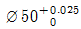
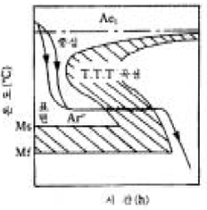

열처리기능사 (2005-01-30 기출문제)
1과목: 임의 구분
1. 과공석강에 대한 설명 중 가장 올바른 것은?
- 층상 조직인 펄라이트 이다.
- 페라이트와 시멘타이트의 층상조직이다.
- 페라이트와 펄라이트의 층상조직이다.
- 펄라이트와 시멘타이트의 혼합조직이다.
(정답률: 62%)

2. 열팽창 계수가 작아 줄자나 표준자 등 불변강에 쓰이는 것은?
- 인바
- 엘디강
- 토마스강
- 듀랄류민
(정답률: 87%)
3. 핵연료 및 신소재에 해당되는 것은?
- 우라늄, 토륨
- 티탄합금, 저용융점합금
- 합금철, 순철
- 황동, 납땜용합금
(정답률: 88%)
4. 고급주철의 특성으로 옳지 않은 것은?
- 기계가공이 가능할 것
- 충격에 대한 저항이 클 것
- 내열, 내식성이 있을 것
- 조직이 조대할 것
(정답률: 82%)
5. 금속의 소성가공을 재결정온도 이상에서 하는 것은?
- 냉간가공
- 상온가공
- 취성가공
- 열간가공
(정답률: 68%)
6. 흑연화를 주목적으로 열처리하는 방법은?
- 흑심가단주철
- 칠드주철
- 보통주철
- 합금주철
(정답률: 91%)
7. 재료의 경도 측정 방법에 속하지 않는 것은?
- 압입경도
- 반발경도
- 인장절단경도
- 긁힘경도
(정답률: 47%)
8. 반자성체에 속하는 금속은?
- Co
- Fe
- Au
- Ni
(정답률: 60%)
9. 금속의 특성을 설명한 것 중 옳은 것은?
- 자연에 존재하는 원소는 103종이다.
- 모든 금속은 상온에서 고체 상태이다.
- 압축강도가 커서 소성가공이 어렵다.
- 빛에 대하여 불투명체이다.
(정답률: 71%)
10. 응고시 금속 중 이종원자가 있어 고용되지 않는 불순물은 최후에 주로 어느곳에 모이게 되는가?
- 결정의 중심부에 모인다.
- 결정 입계에 모인다.
- 결정의 모서리에 모인다.
- 조직의 성장과는 관계가 없다.
(정답률: 56%)
11. 황동이나 청동에 비해 기계적 성질과 내식성이 좋아 화학공업용 기계, 기어, 축수, 등에 사용되는 합금은?
- 에버듀어
- 알루미늄청동
- 코오슨합금
- 알브락
(정답률: 59%)
12. 항공기 본체용 재료에 쓰이는 고강도 Al 합금은?
- 라우탈
- 두랄루민
- 실루민
- 하이드로날룸
(정답률: 53%)
13. 원자 충전율이 68%이며, 배위수가 8인 결정구조를 가지고 있는 격자는?
- 조밀정방격자
- 체심입방격자
- 면심입방격자
- 정방격자
(정답률: 66%)
14. 알루미늄-구리합금 설명 중 틀린 것은?
- 구리 함유량 증가에 따라 인장강도가 증가한다.
- 주조성이 양호하며 가벼운 합금이다.
- 순수한 알루미늄보다 내식성이 훨씬 크다.
- 주조시 고온에서 균열발생 우려가 있다.
(정답률: 40%)
15. 크로멜이나 알루멜 등을 가장 쉽고 간단하게 감별할 수 있는 것으로 밀리볼트계가 사용되는 것은?
- 시약분석법
- 조직시험법
- 접촉열기전력법
- 불꽃시험법
(정답률: 43%)
16. 다음 중 제도에서 스케치도를 작성할 때 가장 적합한 용지는?
- 미농지
- 기름종이
- 트레이싱지
- 방안지(모눈종이)
(정답률: 74%)
17. 축이나 보스(boss)에 가공된 키 홈의 형상을 제도할 때 키 홈의 위치는?
- 도형의 위쪽
- 도형의 아래쪽
- 도형의 왼쪽
- 도형의 오른쪽
(정답률: 65%)
18. 도면에 표시된 NS가 뜻하는 것은?
- 나사의 종류
- 배척
- 비례척이 아님
- 축척
(정답률: 74%)
19. 단면도의 종류 중 상하 또는 좌우 대칭인 물체를 1/4만 절단하여 도형의 반쪽만 단면으로 나타내는 것은?
- 온 단면도
- 한쪽 단면도
- 1/4 단면도
- 부분 단면도
(정답률: 60%)
20. 물체면의 가공방법이 연삭인 경우 기입하는 기호는?
- L
- G
- M
- C
(정답률: 76%)
2과목: 임의 구분
21. 다음 중 기계구조용 탄소강을 표시하는 기호는?
- SM20C
- STC51
- GC25
- SCM21
(정답률: 75%)
22. 정투상법의 제 3각법에서 평면도의 위치는?
- 정면도 위쪽
- 정면도 아래쪽
- 정면도 왼쪽
- 정면도 오른쪽
(정답률: 84%)
23. 투상도에서 물체의 보이지 않는 부분을 나타내는 선은?
- 가는 실선
- 굵은 실선
- 일점 쇄선
- 파선
(정답률: 57%)
24. 도면 치수 기입의 구성 요소가 아닌 것은?
- 치수보조선
- 치수선
- 치수 단위
- 화살표
(정답률: 49%)
25. 도면에서 구멍의 치수가

로 표시되었을 때 이 구멍의 최대허용치수는?- 50.025
- 49.975
- 50
- 0.025
(정답률: 75%)
26. 나사의 도시방법 설명 중 틀린 것은?
- 수나사와 암나사의 골지름은 가는 실선으로 그린다.
- 완전 나사부와 불완전 나사부의 경계는 가는 실선으로 그린다.
- 수나사의 바깥지름과 암나사의 안지름은 굵은 실선으로 그린다.
- 불완전나사부는 가는 실선으로 그린다.
(정답률: 36%)
27. 물체의 단면도에 나타내는 해칭선의 모양은?
- 굵은 실선
- 가는 실선
- 중간 굵기의 파선
- 가는 일점쇄선
(정답률: 71%)
28. 단조 또는 압연으로 만든 제품의 경우 고주파경화에 앞서 자기이력(hysteresis)을 제거하기 위한 전처리가 아닌 것은?
- 담금질
- 풀림
- 노말라이징
- 구상화풀림
(정답률: 45%)
29. 분위기 가스가 투입되는 Batch Type 전기로에서 침탄열처리를 할 때 온도 측정 및 제어용으로 가장 적합한 온도계는?
- IC 열전대 온도계
- CA 열전대 온도계
- 광고온계
- 압력계 온도계
(정답률: 48%)
30. 화염 경화법의 특징이 아닌 것은?
- 로에 들어가지 않는 대형 부품의 국부 담금질이 가능하다.
- 표면을 경화시킨다.
- 산소-아세틸렌 불꽃을 사용한다.
- 부분 담금질이 어렵고 표면조성의 변화가 있다.
(정답률: 58%)
31. 광휘열처리 목적은?
- 산화 및 탈탄을 방지하기 위해서
- 잔류오스테나이트 조직을 제거하기 위해서
- 시멘타이트 조직을 구상화시키기 위해서
- 잔류응력을 제거하기 위해서
(정답률: 56%)
32. 염욕 열처리할 때 안전사고의 원인이 되는 것은?
- 열처리품은 예열을 해야 한다.
- 열처리품의 표면에 수분이 있어야 한다.
- 작업장에 환기시설이 있어야 한다.
- 작업시 보호장구를 착용 한다.
(정답률: 86%)
33. 선반바이트로 사용되는 고속도강(SKH 51)의 담금질 온도로 가장 적합한 것은?
- 750℃
- 850℃
- 1⑤0℃
- 1250℃
(정답률: 64%)
34. 질량효과에 대한 설명으로 틀린 것은?
- 화학성분에 영향을 받음
- 질량효과가 크다는 것은 담금질이 잘 된다는 뜻
- 오스테나이트 결정입도가 클 수록 작음
- 담금질제의 종류 및 상태에 영향을 받음
(정답률: 51%)
35. 열처리할 부품 표면에 있는 기름 성분을 제거하는 전처리 과정은?
- 산세
- 연삭
- 탈지
- 연마
(정답률: 69%)
36. 동일한 조건에서 강을 담금질 작업할 때 냉각효과가 가장 큰 물질은?
- 기름
- 비눗물
- 소금물
- 물
(정답률: 68%)
37. 인체에 가장 유해하고 취급시 주의해야 할 염욕제는?
- CaCl2
- KCN
- NaOH
- NaNO3
(정답률: 52%)
38. 18 - 8 스테인리스강의 기본적인 열처리는?
- 표면연화 열처리
- 취성화 열처리
- 조직조대화 열처리
- 고용화 열처리
(정답률: 73%)
39. 강의 뜨임 작업시 유의사항과 관계가 먼 것은?
- Quenching 후 Tempering 작업을 한다.
- 시편의 급격한 온도변화를 피해준다.
- 200∼300℃ 뜨임 취성에 유의한다.
- A1변태점 이상 급속히 가열한 다음 급히 냉각시켜야 한다.
(정답률: 72%)
40. 작업장 분진 피해의 대책으로 틀린 것은?
- 작업 공정에서 발생 억제
- 비산 방지 조치
- 환기 중지
- 보호구 착용으로 흡입방지
(정답률: 82%)
3과목: 임의 구분
41. 담금질한 강의 시효 균열이나 시효 변형을 방지하기 위한 방법을 가장 바르게 설명한 것은?
- 담금질 한 후에 방청유를 바른다.
- 담금질 한 후 중간 풀림을 실시하면 좋다.
- 담금질 한 후 곧바로 뜨임을 실시해야 한다.
- 담금질 한 후 상온에서 장시간 방치하면 좋다.
(정답률: 66%)
42. 담금질한 강을 0℃ 이하로 급랭시키는 처리는?
- 항온 염욕처리
- 심냉처리
- 용체화처리
- 시효처리
(정답률: 89%)
43. 강의 경화능 측정 시험에 적합한 방법은?
- 조미니시험법
- 현미경조직시험법
- 자분탐상법
- 초음파시험법
(정답률: 66%)
44. 온도측정장치 중 800∼2000℃의 온도 측정에 이용되는 온도계는?
- 저항식 온도계
- 콘스탄탄 온도계
- 압력식 온도계
- 방사 온도계
(정답률: 44%)
45. 소성가공이나 절삭가공을 쉽게하고 기계적 성질을 개선할 목적으로 탄화물을 열처리하는 것은?
- 항온풀림
- 완전풀림
- 확산풀림
- 구상화풀림
(정답률: 60%)
46. 침탄시 탄소농도의 변화가 급격하여 경도 변화가 클 때 경화층이 떨어져 나가는 현상은?
- 연점
- 박리
- 백점
- 수축공
(정답률: 77%)
47. 금속발열체로 사용온도가 가장 높은 것은?
- 니크롬
- 칸탈
- 철크롬
- 텅스텐
(정답률: 86%)
48. 열처리용 치공구 재료에 필요한 조건이 아닌 것은?
- 내식성이 우수할 것
- 고온강도가 클 것
- 변형이 클 것
- 제작하기 쉬울 것
(정답률: 87%)
49. 열처리시 산화방지를 위한 가장 좋은 방법은?
- 결정립을 조대화시킨다.
- 탈탄생성을 촉진시킨다.
- 노내분위기를 조절한다.
- 산화분위기에서 가열한다.
(정답률: 58%)
50. 다음 그림과 같은 특수 열처리 방법은?

- 오스템퍼링
- 마템퍼링
- 마퀜칭
- 가공 열처리
(정답률: 64%)
51. 지름이 큰 롤러나 축등의 냉각에 이용하면 효과적인 냉각 장치는?
- 공랭장치
- 수냉장치
- 유냉장치
- 분사냉각장치
(정답률: 60%)
52. 마텐자이트 변태의 시작과 끝나는 온도를 바르게 표시한 것은?
- Ms,Mf
- Mt,Mc
- Mr,Me
- Ma,My
(정답률: 88%)
53. 구조용강을 전기로에서 열처리할 때 유의해야 할 사항이 아닌 것은?
- 젖은 손으로 전원 스위치를 조작해서는 안된다.
- 재료를 넣을 때나 꺼낼 때 화상을 입지 않도록 유의 한다.
- 승온시 급가열하여 가열시간을 단축한다.
- 산화, 탈탄 방지에 노력한다
(정답률: 91%)
54. 고체 침탄법에 사용되는 침탄제는?
- 황산
- 암모니아
- 목탄
- 시안화소다
(정답률: 58%)
55. 시멘타이트와 순철의 자기변태가 맞는 것은?
- A1 , A3
- A0 , A2
- A3 , A4
- A1 , A4
(정답률: 64%)
56. 금속침투법 중 침투원소로 Cr을 사용하는 방법은?
- 셰라다이징
- 칼로라이징
- 보로나이징
- 크로마이징
(정답률: 81%)
57. 스프링강의 구비조건이 아닌 것은?
- 탄성한도가 높아야 한다.
- 피로한도가 낮아야 한다.
- 충격값이 높아야 한다.
- 내열성, 내부식성이 양호해야 한다.
(정답률: 63%)
58. 다음 중 초경합금 공구강에 대한 설명은?
- 전기로에서 Cr, W등을 첨가하여 제조
- 1200∼1250(℃)에서 담금질, 550∼650(℃)에서 뜨임처리 하여 사용
- WC와 Co분말을 1400(℃)의 수소기류 중에서 가열 소결한다
- Co, Cr, W을 용해하여 주조한 그대로 사용
(정답률: 31%)
59. 침탄이 완료된 강의 설명 중 옳은 것은?
- 중심부 조직이 조대화 된다.
- 경화처리가 필요치 않다.
- 표면이 고탄소로 된다.
- 중심부가 고탄소로 된다.
(정답률: 48%)
60. 가스로의 일반적인 특징이 아닌 것은?
- 노내 온도 조절이 용이하다.
- 온도를 균일하게 지속시킬 수 있다.
- 복사열 작용을 한다.
- 점화가 복잡하다.
(정답률: 83%)